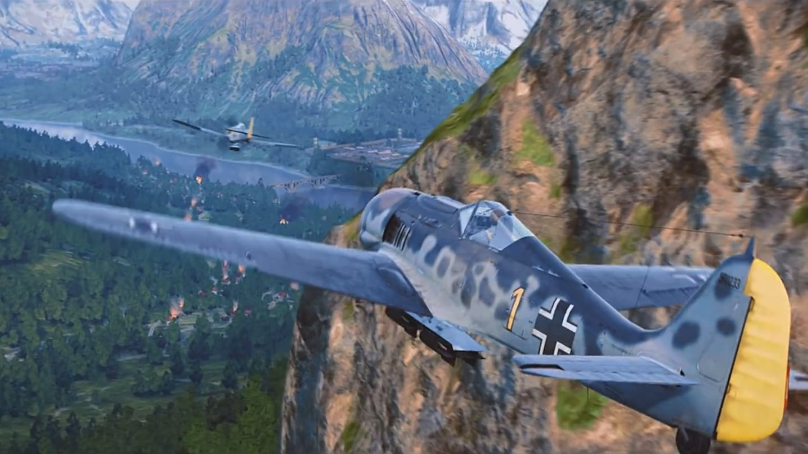

Wargaming.net — компанія яка розробляє і видає відеоігри на ринку free-to-play MMO. Штаб-квартира компанії знаходиться у Кіпрі, Нікосія. Центри розробок компанії знаходиться у Мінську, Києві та Санкт-Петербурз.
Компанія була заснована 1998 року. Станом на червень 2012 року штат співробітників Wargaming.net налічував близько 1200 чоловік по всьому світу і з них близько 400 чоловік в Мінську
| World of Tanks | World of Warplanes | World of Warships |
|---|---|---|
|  | |
|
| Стаття у Вікіпедії | Стаття у Вікіпедії | Стаття у Вікіпедії |
| World of Tanks (скорочено WoT; укр. Світ танків) — відеогра, клієнтська масова багатокористувальницька онлайн-гра в реальному часі в жанрі аркадного танкового симулятора в історичному сеттінгу Другої світової війни, розроблена білоруською студією Wargaming.net. Розробниками гра позиціонується як MMO-екшн з елементами рольової гри, шутера і стратегії. | World of Warplanes (укр. Світ бойових літаків) — відеогра, клієнтська масова багатокористувальницька онлайн-гра в реальному часі в жанрі аркадного авіаційного екшна, анонсована білоруською студією Wargaming.net 7 червня 2011 року в місті Лос-Анджелес на виставці Electronic Entertainment Expo. Гра розробляється компанією Persha Studia в Києві (Україна), видавцем виступає Wargaming.net. | World of Warships (можна перекласти як Світ військових кораблів) — відеогра, клієнтська масова багатокористувацька онлайн-гра в реальному часі у жанрі симулятора морських битв та історичному Сетинґу Другої світової війни, анонсована білоруською студією Wargaming.net 16 серпня 2011. |
| Ігри | Платформи | |||
|---|---|---|---|---|
| PC | Mobile | PlayStation | Xbox | |
| World of Tanks | Так | Так | Так | Так |
| World of Warplanes | Так | Ні | Ні | Ні |
| World of Warships | Так | Так | Ні | Ні |